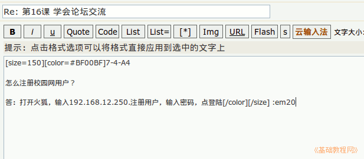

2014-2015 第一学期七年级文字处理和网页教学设计
作者：TeliuTe 来源：基础教程网
十六、学会论坛交流 返回目录 下一课
（一）教学设计
1、学习目标：学会Ubuntu基本操作，校园网操作，中英文指法
2、注意事项：绕过弯来，既不要跳也不要落，一楼过了二楼
3、教学过程：
1）教师准备学案和板书；
2）学生整队进入，开机抄黑板上笔记；
3）教师讲解板书演示操作；
4）学生打指法、日志、完成操作；
5）教师打勾记录学生指法成绩，检查日志和操作；
注：学生抄完笔记就开始打指法、日志，老师讲完后再继续完成；
（二）板书设计(学生笔记)
第16课 学会论坛交流
1、进校园网，点左侧“Ubuntu"论坛。
2、点右上角登陆，st86,st86st.
3、找到“课堂教学与培训”，点第16课。
4、拉到最下面文框，输入，提文。
（7-2 机号）
2014-11-13 18:35
--
1、怎样注册校园网用户？
2、这样设置头像
3、这样设置主页？
4、怎样添加书签？
5、这样设置头像？
6、这样设置桌面背景？
7、这样修改自己登录名？
8、这样查看系统信息？
操作图示：

（三）课后记
--
抄笔记的时候，要求把词语分出来，理一下步骤
把这节课的学习内容，论坛简单的说一下，交流的场所
--
把自己优秀的，熟练的技巧或知识发上去跟人交流
打日志的时候，把右边的题目说一下，分组、每组两题，每人选一题
--
学生打指法的时候，就把网开开，太早了学生会显示上节课没关闭的页面
然后做的快的同学就可以按照步骤去找论坛登入
--
找课堂教学子版面不好找，很多学生找不着就放弃了，描述上再找个更好的
先找教学，再找下面一行小字课堂教学，用第二格学生不熟悉，找不着
--
学生对做题没多少灵感，大都是翻翻笔记，把前面的课程笔记抄一下
有些是抄别人的内容，出题目还是要多花点时间，多想一想
--
字体设好后没有所见即所得，是代码方式，学生有些不理解
演示的时候应该讲一下，设置字号后，显示的是数字
--
返回目录 下一课
本教程由86团学校TeliuTe制作|著作权所有
基础教程网：http://teliute.org/
美丽的校园……
转载和引用本站内容，请保留作者和本站链接。